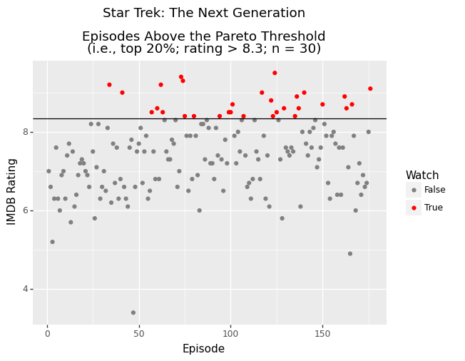

The Pareto Principle says that “for many events, roughly 80% of the effects come from 20% of the causes”. What if you could get 80% of the enjoyment from a TV show by watching only the top 20% of its episodes?
This was a thought experiment inspired by a discussion on Reddit that I thought would be fun to prototype. :)
A user-interactive version can be found on Google Colab (generate your own list of episodes!).
imdb_id = 'tt0092455' # Star Trek: TNG
Get IMDB data
import pandas as pd
import numpy as np
from plotnine import ggplot, geom_point, aes, labels
from imdb import IMDb
imdb = IMDb() # Client
# Get a TV series by ID
series = imdb.get_movie(imdb_id[2:])
imdb.update(series, 'episodes') # Change type
series_eps = series['episodes']
seasons = []
episodes = []
ratings = []
abs_episodes = []
absolute_episode = 0 # Keep track of the absolute episode number
for season in sorted(series_eps.keys()):
for episode in sorted(series_eps[season].keys()):
absolute_episode = absolute_episode + 1
if 'rating' in series_eps[season][episode]:
rating = round(series_eps[season][episode]['rating'], 2)
seasons.append(season)
episodes.append(episode)
abs_episodes.append(absolute_episode)
ratings.append(rating)
# To pandas dataframe
df = pd.DataFrame({'season': seasons,
'episode': episodes,
'rating': ratings,
'abs_episode': abs_episodes})
Visualize Episodes that Pass the Pareto Cut-Off
We’ll set the cut-off at the 80th percentile. Episodes above this line represent the upper 20% of all episodes in the series. These are the episodes to watch. Let’s take a look at those episodes.
# Calculate 80th percentile and label episodes
# that exceed this cut-off
eighty_percentile = np.percentile(df.rating, 80)
df['Watch'] = df['rating'] > eighty_percentile
from plotnine import ggplot, geom_point, aes,\
labels, geom_hline, annotate, ggtitle, scale_colour_manual
(
ggplot(df, aes(x = 'abs_episodes', y = 'rating', color = 'Watch'))
+ geom_point()
+ labels.xlab("Episode")
+ labels.ylab("IMDB Rating")
+ geom_hline(yintercept = eighty_percentile + 0.05)
+ ggtitle(series['title'] + \
f"\n\nEpisodes Above the Pareto Threshold" + \
f"\n(i.e., top 20%; rating > {eighty_percentile}; n = {len(df[df.Watch == True])})")
+ scale_colour_manual(values = ['grey', 'red'])
)

<ggplot: (-9223371895425625404)>
List the Episodes to Watch
Now let’s list all of the episodes that you need to watch! :)
print(f"You have {len(df[df.Watch == True])} episodes to watch")
You have 30 episodes to watch
# Set option to allow printing all rows
with pd.option_context('display.max_rows', None, 'display.max_columns', None):
print(df[df.Watch == True][['season', 'episode', 'rating']].to_string(index=False))
season episode rating
2 9 9.2
2 16 9.0
3 10 8.5
3 13 8.6
3 15 9.2
3 16 8.5
3 26 9.4
4 1 9.3
4 2 8.4
4 7 8.4
4 21 8.4
4 26 8.5
5 1 8.5
5 2 8.7
5 8 8.4
5 18 9.0
5 23 8.8
5 24 8.4
5 25 9.5
5 26 8.5
6 4 8.6
6 10 8.4
6 11 8.9
6 12 8.6
6 15 9.0
6 25 8.7
7 11 8.9
7 12 8.6
7 15 8.7
7 25 9.1